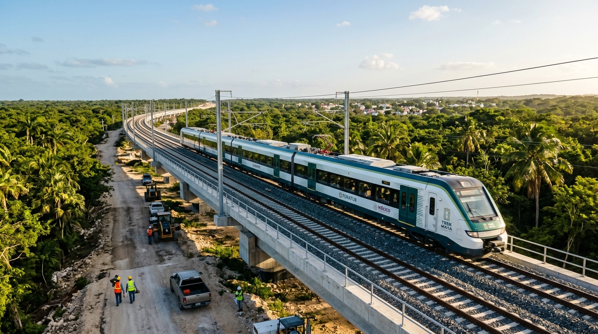
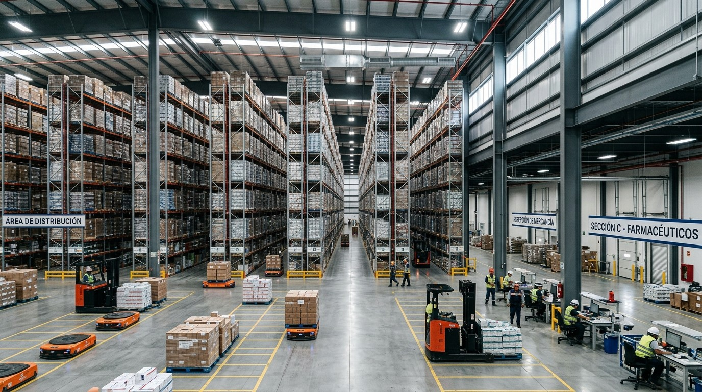
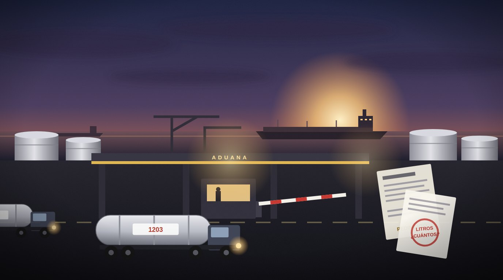

Ciénega de Flores: el dinero público alrededor de LEGO
¿Qué dinero público rodea a la planta de LEGO en Ciénega de Flores?
El recorrido de esta investigación
Tres pasos: entender el caso, comprobar sus números y revisar los documentos que lo sostienen.
- Entiende el casoQué pasó, cuánto dinero involucra, quién interviene y qué falta saber.Leer el caso ➔
- Explora los númerosEl mapa de lo que baja a cada estado, con su fuente oficial.Ir a Números ➔
- Revisa la evidenciaEl auditor de entes públicos: los documentos que sostienen el caso.Abrir el Inspector ➔
📝 Lectura breve
El caso en cinco preguntas, con sus documentos. Más abajo, la lectura ampliada: las cuentas paso a paso.
- Qué pasó
La Conagua construye un acueducto de 106.0 km para llevar agua potable al Área Metropolitana de Monterrey y su zona conurbada, en beneficio de 5,371,290 usuarios según la ASF. En sus tres revisiones, de 2022 a 2024, la ASF dejó $105.2 mdp por aclarar y promovió 13 pliegos de observaciones.
- Cuánto dinero
- 3 informes individuales revisados oficial
- $105.2 mdp por aclarar, suma de esos informes derivado
- 13 · 7 pliegos de observaciones · promociones de responsabilidad derivado
- Quién interviene
Comisión Nacional del Agua. Revisó la Auditoría Superior de la Federación.
- Qué documento lo acredita
- ASF, informes individuales de la fiscalización superior de las Cuentas Públicas 2022, 2023, 2024.
- Cuenta Pública 2022, auditoría 77: Construcción del Acueducto El Cuchillo II, en el Estado de Nuevo León ↗
- Cuenta Pública 2023, auditoría 101: Construcción del Acueducto El Cuchillo II, en el Estado de Nuevo León ↗
- Cuenta Pública 2024, auditoría 95: Construcción del Acueducto El Cuchillo II, en el Estado de Nuevo León ↗
- Qué falta saber
Reúne sólo las auditorías enlistadas abajo. La ASF pudo practicar otras a estos entes que no están aquí. Un monto «por aclarar» no es un daño probado: es dinero que el ente no comprobó al cierre de la auditoría y que sigue en proceso. La ampliación de la planta de LEGO que se ha anunciado no tiene todavía un documento oficial en esta plataforma: su monto no se suma a ninguna cifra.
🖼️ Otras auditorías en imágenes
Cómo verificamos: cada cifra lleva su fuente oficial y su estado: oficial derivado pendiente. Las imágenes son ilustraciones, no evidencia. Lee la metodología y las novedades ➔

🚅 Megaobra ferroviaria · FONATUR y Tren MayaTren Maya 🏭 Refinación · Pemex, Paraíso, TabascoRefinería Olmeca (Dos Bocas) 🏛️ Costo financiero de la deuda · PEF 2026Los intereses de la deuda pública ✈️ Infraestructura aeroportuaria · DefensaAeropuerto Internacional Felipe Ángeles (AIFA) 🚄 Transporte ferroviario · SICTTren Interurbano México-Toluca «El Insurgente»
💊 Almacén de medicamentos · Birmex, HuehuetocaMegafarmacia del Bienestar (Huehuetoca)
⛽ Evasión en combustibles · IEPS, aduanas y SATHuachicol fiscal: el impuesto que no entra